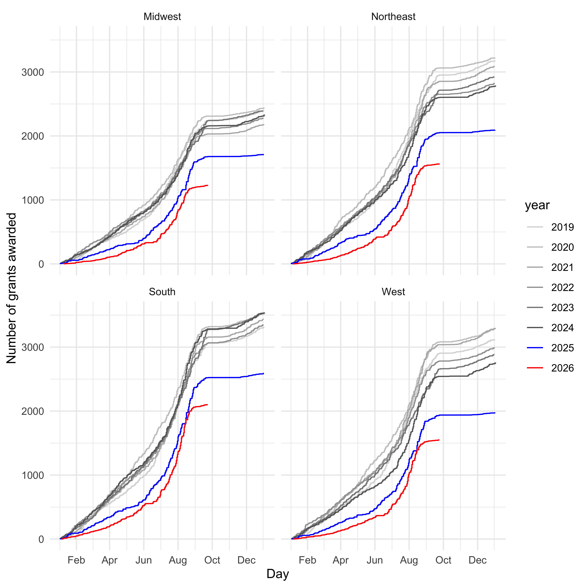
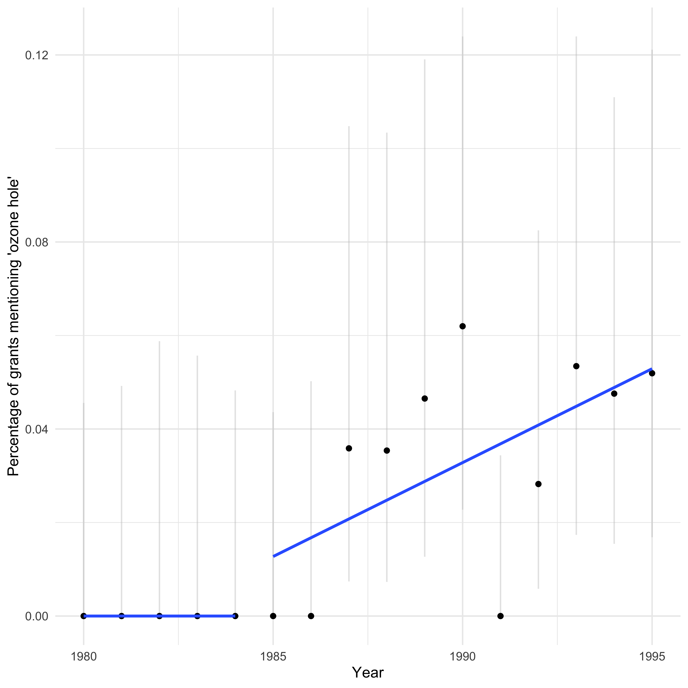
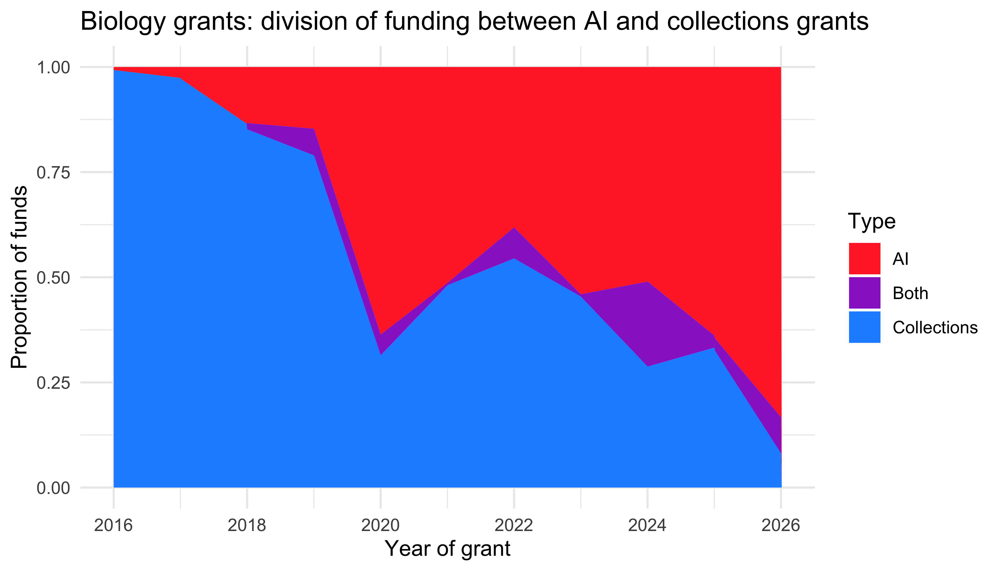
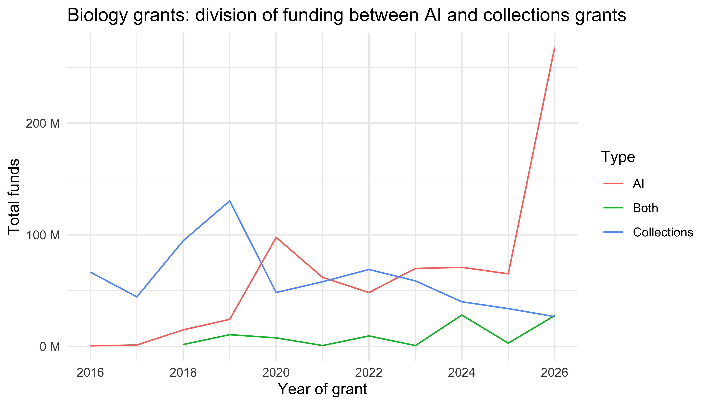
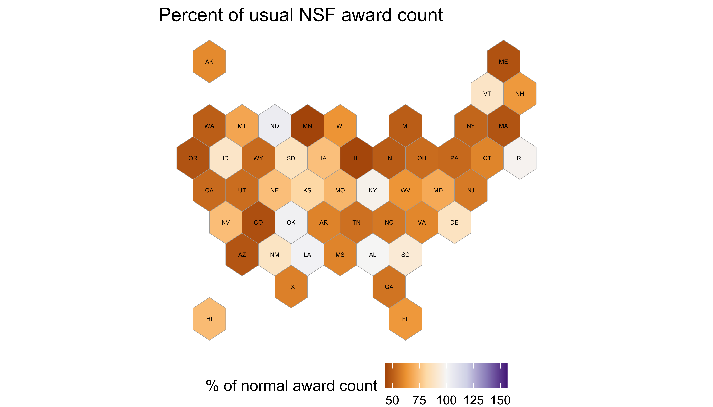
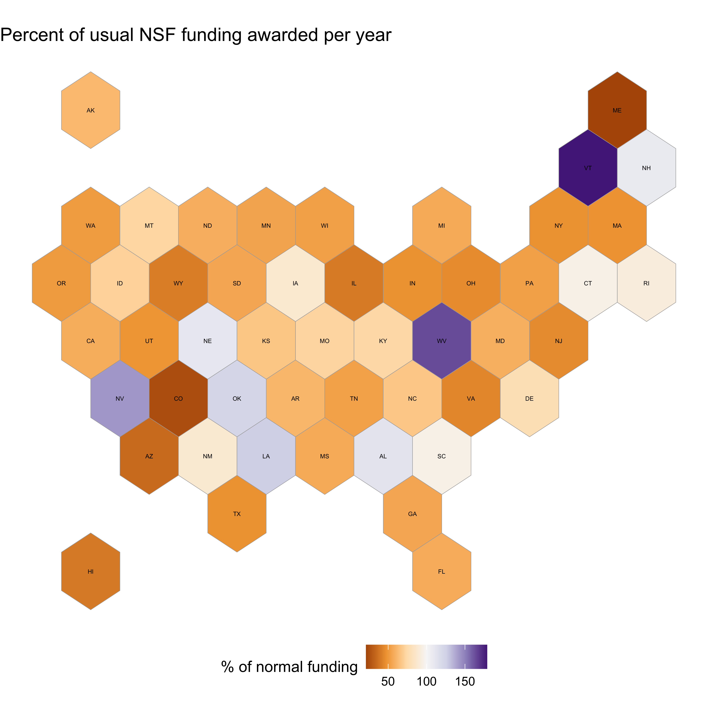
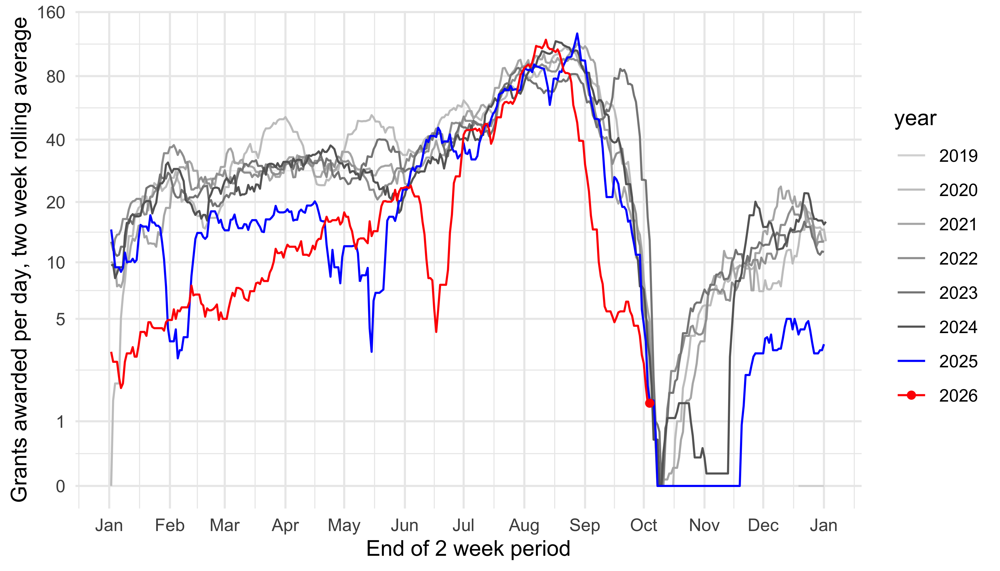
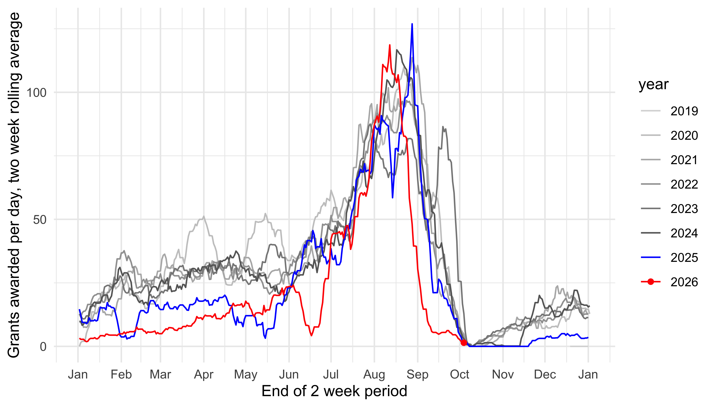
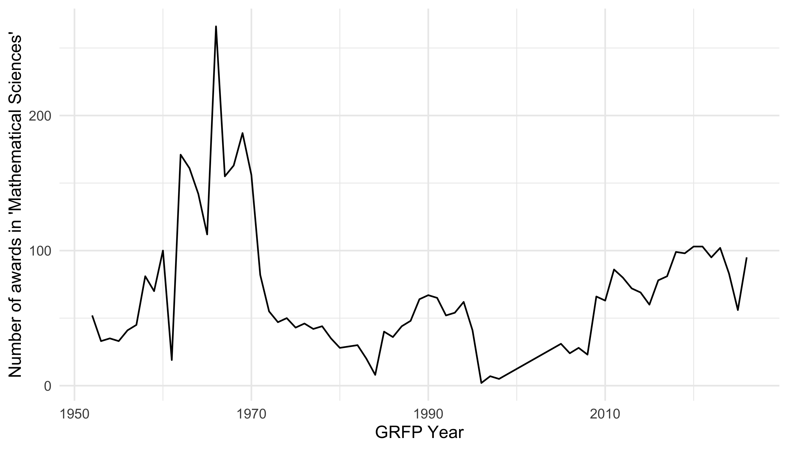

Unofficial package to interface with NSF API
It also has abstracts, dates, and more information for all grants up to 2026-09-23.
New (Oct 2026) You can just install this package the way you would any R package on github:
(You’ll need to first install remotes (by doing install.packages("remotes")) if you don’t already have it).
Thanks to the piggyback package, the huge cached files are now stored as releases rather than within the package, making install easy.
There are three main ways to get data:
rnsf::nsf_return() with various arguments to pull in data directly from NSF’s API for awards. Good if you want to find info by keyword, state, or other fields.
rnsf:nsf_return(keyword="Yellowstone"). It will call the API multiple times until it has downloaded info on all grants with that keyword and returned a data.frame object.rnsf::load_nsf_grants() to load cached data (available here) for years you specify. By default, it loads cached data from the most recent year. Good if you want to do an analysis across thousands of grants.
rnsf::load_nsf_grants(year_start=2020) and it will download the cached grants.data(grfp) after loading the package to load information on all the Graduate Research Fellowship Program awards and honorable mentions (these are not available from NSF’s API, so I had to download each year’s pair of spreadsheets).Below are some examples of the package’s utility; see https://github.com/bomeara/rnsf/blob/master/README.Rmd for the details of the code to make the plots.
Scientist Jeremy Berg often graphs federal funding over time (see https://jeremymberg.github.io/jeremyberg.github.io/). The very useful website Grant Witness has adopted these graphs, including invaluable updates of national funding and breakdowns by NSF division (see, for example, here). With the rnsf package we can look at finer detail. For example, the US Census splits the 50 US states into four different regions: Northeast, Midwest, South, and West. We can look at funding over time by region instead of nationally:

Note some important differences between the plots above and those from Grant Witness: they typically plot by financial year, not calendar year; they also filter out transfer grants (a grant moves between PIs or institutions) and the code above does not do that.
The ozone hole was discovered in 1985: pollution led to a depletion of the ozone layer, which shields people (and other organisms) from a great deal of UV radiation. The world came together and passed the Montreal Protocol to limit the pollution, chlorofluorocarbons, that was causing the damage. The hole is healing, but still requires research and monitoring. We can see how NSF grants mentioning “ozone hole” changed over time (though not all grants mentioning “ozone hole” study this issue; some could be using it as a comparison to some other issue, for example). We can include a regression before and after 1985 and show the 95% CI for the proportion in each year (truncated by the y-axis limits).

Let’s look just at awards made in any program with “bio” or “systematics” or “evolution” in the name (biology grants) and see how words have changed between those that mention collections-related work (voucher, collection, field work, fieldwork, specimen) or those that mention AI (AI, artificial intelligence, LLM, large language model) in the abstract. First as a proportion of all the grants of either kind:


We can also look at a table with the number, not total money, of grants by state or territory by academic semester, for example (only including this year up to the last cache of the data).
| Area | 2024 Spring | 2024 Fall | 2025 Spring | 2025 Fall | 2026 Spring | 2026 Fall |
|---|---|---|---|---|---|---|
| California | 508 | 752 | 361 | 586 | 269 | 451 |
| New York | 371 | 475 | 256 | 371 | 160 | 287 |
| Texas | 324 | 415 | 224 | 355 | 140 | 273 |
| Massachusetts | 327 | 410 | 189 | 305 | 127 | 229 |
| Pennsylvania | 243 | 282 | 165 | 233 | 116 | 190 |
| Illinois | 218 | 277 | 122 | 224 | 79 | 132 |
| Virginia | 161 | 227 | 89 | 139 | 69 | 138 |
| Florida | 184 | 225 | 105 | 179 | 101 | 144 |
| Michigan | 208 | 215 | 97 | 188 | 77 | 118 |
| North Carolina | 153 | 210 | 103 | 181 | 71 | 131 |
| Colorado | 111 | 183 | 73 | 146 | 44 | 105 |
| Arizona | 101 | 177 | 65 | 99 | 35 | 92 |
| Georgia | 137 | 171 | 78 | 147 | 57 | 111 |
| Indiana | 130 | 166 | 83 | 157 | 59 | 89 |
| Maryland | 118 | 147 | 79 | 129 | 81 | 106 |
| New Jersey | 123 | 146 | 90 | 138 | 63 | 100 |
| Washington | 97 | 144 | 68 | 106 | 43 | 91 |
| Ohio | 110 | 134 | 73 | 106 | 49 | 92 |
| Tennessee | 78 | 108 | 41 | 83 | 35 | 51 |
| Alabama | 63 | 105 | 51 | 74 | 35 | 90 |
| Wisconsin | 76 | 105 | 64 | 91 | 44 | 72 |
| South Carolina | 60 | 102 | 31 | 66 | 31 | 73 |
| District of Columbia | 51 | 101 | 42 | 55 | 32 | 58 |
| Minnesota | 79 | 101 | 47 | 62 | 27 | 43 |
| Rhode Island | 66 | 84 | 46 | 71 | 47 | 71 |
| Oregon | 68 | 83 | 41 | 65 | 27 | 49 |
| Iowa | 54 | 77 | 36 | 66 | 23 | 60 |
| Louisiana | 54 | 77 | 30 | 68 | 33 | 68 |
| Utah | 44 | 77 | 35 | 65 | 26 | 45 |
| Missouri | 74 | 76 | 64 | 63 | 41 | 62 |
| Connecticut | 66 | 63 | 52 | 66 | 31 | 58 |
| New Mexico | 34 | 62 | 21 | 38 | 21 | 53 |
| Oklahoma | 42 | 59 | 23 | 51 | 26 | 47 |
| Kansas | 29 | 58 | 14 | 34 | 24 | 40 |
| Nebraska | 39 | 55 | 22 | 44 | 14 | 34 |
| Hawaii | 15 | 53 | 16 | 28 | 15 | 32 |
| Kentucky | 36 | 51 | 28 | 40 | 16 | 44 |
| Delaware | 18 | 47 | 31 | 37 | 19 | 37 |
| Idaho | 16 | 43 | 16 | 31 | 14 | 24 |
| Nevada | 12 | 43 | 11 | 31 | 10 | 32 |
| New Hampshire | 21 | 36 | 21 | 35 | 11 | 27 |
| Mississippi | 38 | 35 | 19 | 35 | 10 | 20 |
| Alaska | 10 | 32 | 4 | 19 | 5 | 26 |
| Montana | 19 | 32 | 8 | 22 | 8 | 27 |
| Maine | 30 | 27 | 10 | 24 | 5 | 16 |
| Arkansas | 27 | 25 | 10 | 26 | 13 | 14 |
| West Virginia | 28 | 25 | 8 | 26 | 5 | 17 |
| South Dakota | 20 | 22 | 17 | 17 | 4 | 19 |
| Vermont | 13 | 22 | 12 | 13 | 6 | 17 |
| Puerto Rico | 7 | 20 | 9 | 14 | 3 | 13 |
| Wyoming | 10 | 19 | 7 | 18 | 5 | 7 |
| North Dakota | 11 | 12 | 9 | 21 | 9 | 15 |
| Virgin Islands of the U.S. | 0 | 3 | 1 | 1 | 0 | 1 |
| American Samoa | 0 | 1 | 0 | 0 | 0 | 0 |
| Guam | 0 | 0 | 2 | 1 | 0 | 0 |
We can see how number of awards and total value of awards by state or territory versus the average so far this year compares to average funding at this point of the year for 2017-2024 (so it encompasses two different administrations).


Note that VT had an increase of 288% but was truncated at 179 so that no change would remain at the center of the plot colors.
How is NSF awarding grants over time? This uses a two week rolling interval, showing the average grants awarded per day in that interval.

And rolling window not on a log scale:

The NSF Graduate Research Fellowship Program (GRFP) is one of NSF’s oldest and most impactful programs: it provides funding for three years of study for people in grad school, giving them flexibility (no need for a research or teaching assistantship); the stipends are also often higher than those for most grad students. Every year, names, affiliations, and research areas of awardees (those receiving the money) and those with honorable mentions are released here but you can only get one year at a time. I have manually downloaded them all and incorporated them into the package. To use:
You can then plot information or do other analyses. For example, the number of awards in Mathematical Sciences over time:

And the frequency of different subfields of math, showing just the first twenty from the past ten years of awards:
| Algebra Or Number Theory | 786 |
| Analysis | 758 |
| Mathematical Sciences | 539 |
| Topology | 466 |
| Applications Of Mathematics (Including Biometrics And Bi | 465 |
| Algebra, Number Theory, And Combinatorics | 359 |
| Applied Mathematics | 239 |
| Probability And Statistics | 227 |
| Logic Or Foundations Of Mathematics | 172 |
| Geometry | 139 |
| Statistics | 131 |
| Mathematical Biology | 84 |
| Operations Research | 76 |
| Biostatistics | 70 |
| Computational Mathematics | 51 |
| Geometric Analysis | 37 |
| Probability | 31 |
| Computational And Data-Enabled Science | 25 |
| Artificial Intelligence | 16 |
| Computational Statistics | 16 |
First, update the package version in the DESCRIPTION.
Then the directory containing the package source:
library(rnsf)
grants_this_year <- nsf_update_cached_this_year() # perhaps worth doing a new nsf_get_all() after the beginning of the year
devtools::build_readme()
pkgdown::build_site()
system("git add */*")
system("git commit -m'automatic update of page and data' -a --no-verify") # ignore the readme warning
system("git push")If new GRFP results are out, download them, retitle them as Awardee or HonorableMention with year and .tsv (i.e., “Awardee2030.tsv”) and put them in the inst/extdata directory in the package source. Reinstall the package. Then,
Then do the usual git things.